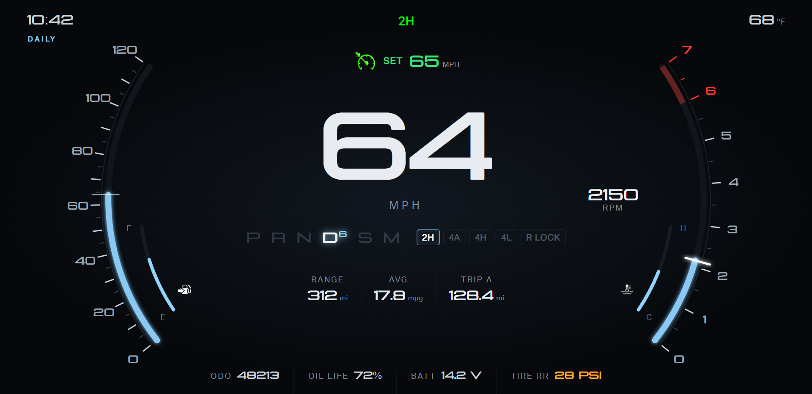
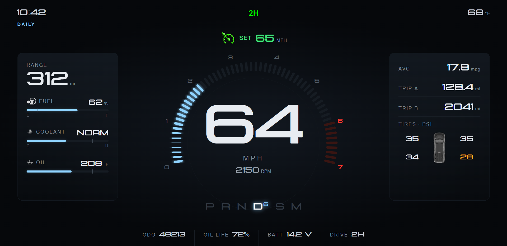
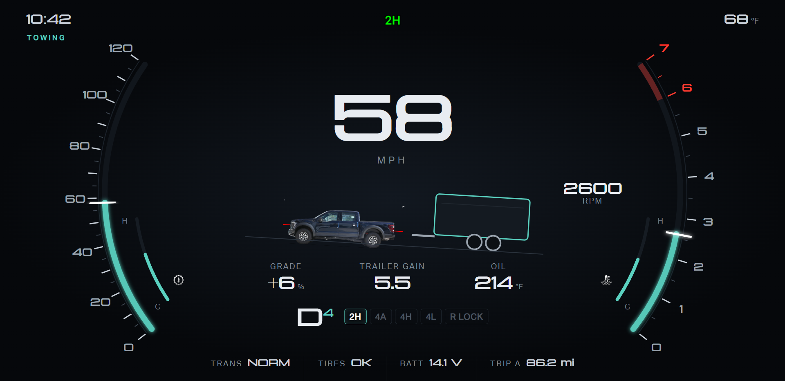
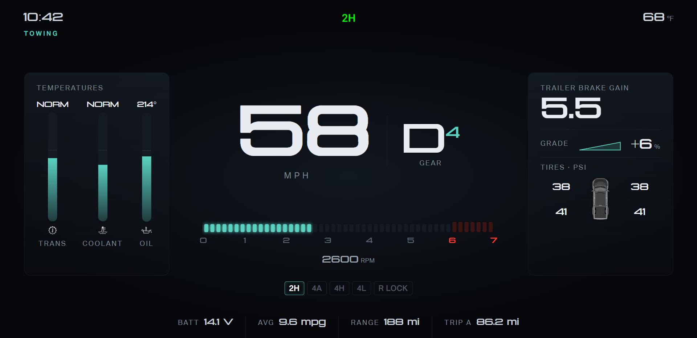
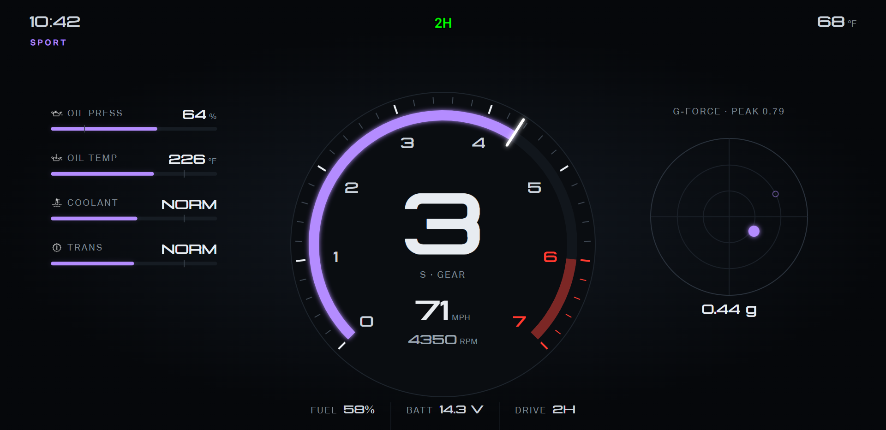
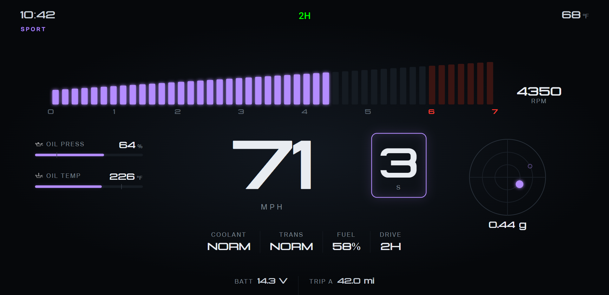
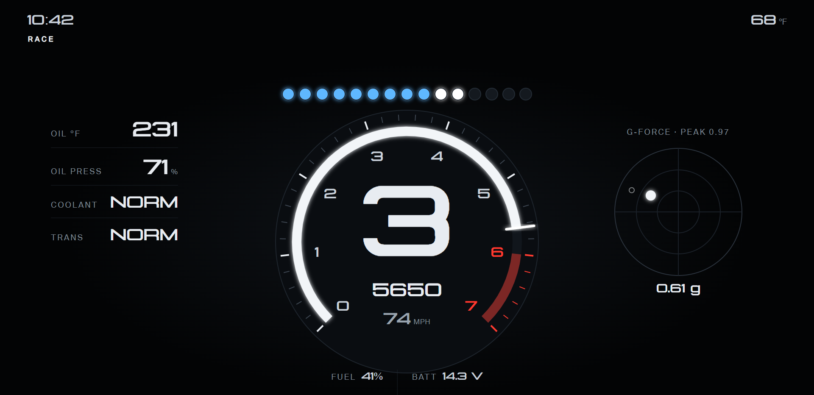
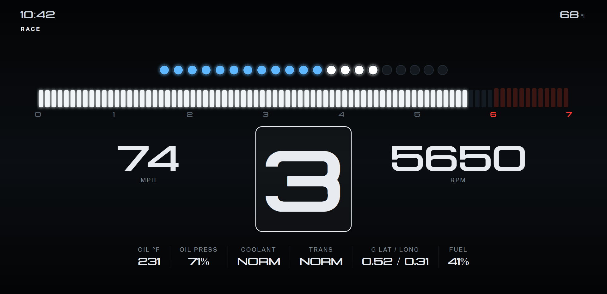
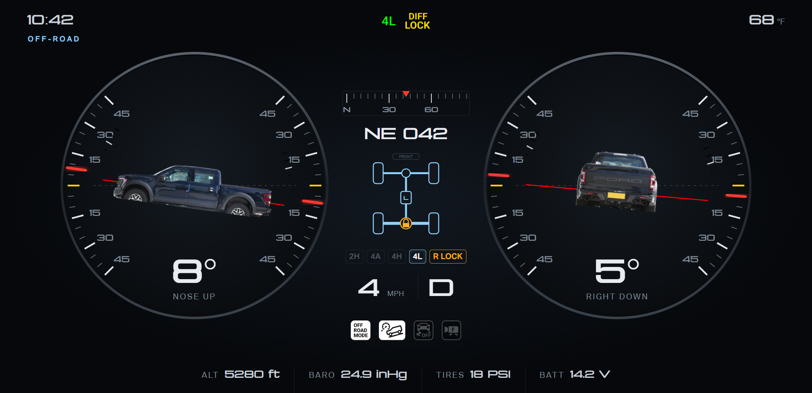
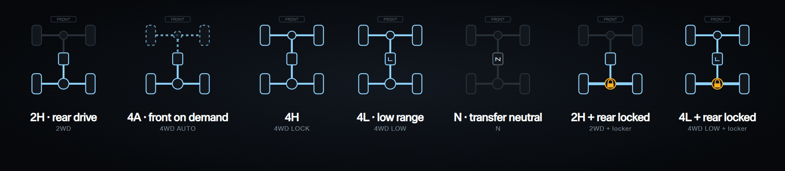

F150 cluster · Design round 2
Four driving modes, one A/B pick per mode. A uses analog arcs and dials. B uses digital numerals and bars. Both families stay in scope, so modes can mix.
Sample values only. Canvas 1920 × 932. Add ?view=physical for the model index 0 preview (unverified for the F150).
- Off-road option A is locked. Every layout now uses the off-road A top bar: alarm row at top center, cruise region at x 810, y 104 (300 × 80).
- Left-hand drive: driver side is left on every vehicle graphic. Tire positions, doors, and the fuel door arrow follow the LHD plan view.
- Drivetrain: rear-wheel drive with 2H, 4A, 4H, 4L, transfer neutral, and the rear e-locker. One drawn component replaces the stock sprite, which powers the axle at the engine in 2WD.
Daily
A · Crescent

- Speed and tach crescents at the screen edges. Fuel and coolant arcs sit inside the crescents.
- Center: large speed, gear row, drive mode chips, range, average, trip.
B · Halo

- Tach halo wraps the speed. Side panels hold range, fluids, trips, and tire pressures.
Daily pick: A or B
Towing
A · Crescent

- Transmission temperature replaces fuel inside the speed crescent.
- Center: truck and trailer tilted by grade, grade %, trailer brake gain, oil temperature, held gear.
B · Columns

- Transmission, coolant, and oil columns with a normal band. Trailer panel: brake gain, grade, tire pressures.
Towing pick: A or B
Sport
A · Center Dial

- One tach dial with the gear inside. Oil pressure, oil and fluid temperatures on the left. G-force on the right.
B · Blade

- Rising tach blade across the top. Speed with a boxed gear. Oil readouts and G-force flank the speed.
Sport pick: A or B
Race
A · Shift Dial

- Shift lights over a tach dial. Gear dominates. Oil, coolant, and transmission stats on the left. G-force on the right.
B · Strip

- Shift lights and a full-width bar tach. Boxed gear between speed and rpm. One stat row below.
Race pick: A or B
Off-road (locked A) and drivetrain states

Sample: 4L with the rear locker engaged. DIFF LOCK telltale (alarm 76) shown in the alarm row.
